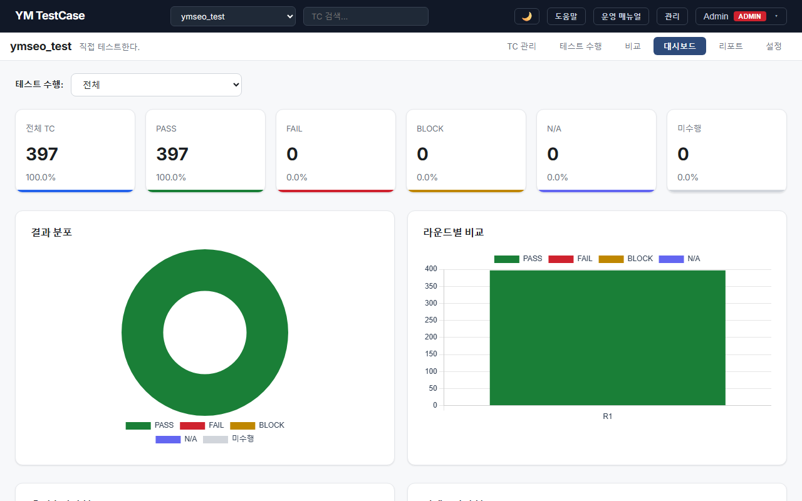

YM TestCase는 QA 팀과 개발팀을 위한 셀프 호스팅형 테스트케이스 관리 도구입니다. 스프레드시트처럼 빠르게 작성하고, 대시보드로 진행률을 한눈에 파악하세요.
기존 도구들의 한계를 직접 경험하고, 진짜 필요한 것만 담았습니다.
테스트케이스 작성부터 실행, 분석, 리포트까지 — 전체 QA 워크플로우를 하나의 도구에서.
AG Grid 기반 인라인 편집. 멀티 행 추가, 벌크 삭제, Undo/Redo, 찾기/바꾸기(정규식) 지원.
N-depth 계층형 시트로 테스트 스위트를 폴더처럼 관리. 엑셀 스타일 탭 인터페이스.
6가지 필드 타입(텍스트, 숫자, 셀렉트, 멀티셀렉트, 체크박스, 날짜). 프로젝트별 동적 추가.
테스트 런에서 P/F/B/N 키보드 단축키로 빠르게 결과 기록. 타이머, 첨부파일 지원.
Chart.js 기반 진행률 시각화. 라운드별 비교, 회귀 감지. PDF/Excel 리포트 생성.
AND/OR 다중 조건 필터. 6가지 연산자(=, !=, 포함, 미포함, >, <). 필터 뷰 저장/로드.
Excel 멀티시트 임포트. Jira CSV(35+ 헤더 매핑, CP949/UTF-8 BOM 자동 감지). 벌크 Upsert.
마일스톤 기반 테스트 계획. 릴리즈별 실행 추적과 커버리지 시각화.
JWT + httpOnly 쿠키. 시스템 역할(Admin/QA Manager/User)과 프로젝트 역할(Admin/Tester) 이중 RBAC.
실제 동작하는 화면입니다. 다크 모드를 포함한 전체 UI를 확인하세요.

검증된 오픈소스 기술만으로 구성. 복잡한 인프라 없이도 강력한 기능을 제공합니다.
React 19 + TypeScript
AG Grid + Chart.js
Vite Dev Server
:5173
FastAPI + Uvicorn
15 Route Modules
JWT Auth + RBAC
:8008
SQLite (default)
13 Tables
Alembic Migrations
Zero Config
567개 자동화 테스트가 전체 기능을 검증합니다. 빌드, 린트, 테스트 — 모든 품질 게이트 통과.
Vitest · 23개 테스트 파일
컴포넌트, API, 유틸리티
Playwright · 9개 스펙 파일
인증, TC, 시트, 커스텀 필드
pytest · 보안, 기능, 엣지 케이스
통합 테스트
v0.1부터 v0.7.1까지, 단계적으로 기능을 확장해 온 개발 여정.
설계 결정, 기술 선택, 보안 강화, 오픈소스 공개까지 — 전 과정을 기록한 기술 블로그.
Excel과 TestRail의 한계, 직접 만들기로 한 이유
FastAPI + React + AG Grid + SQLite 조합의 이유
스프레드시트 편집과 Excel Import/Export
테스트 런, 키보드 단축키, 리포트 생성
JWT 인증과 이중 역할 기반 접근 제어
비밀번호 정책, Rate Limiting, 파일 보안
Playwright 스크린샷, 사용자 매뉴얼 자동화
시트 트리, 커스텀 필드, 테스트 플랜, Jira CSV
브랜딩, AGPL-3.0, 567 테스트의 의미
1인 개발의 현실, Best Practices, 미래 계획